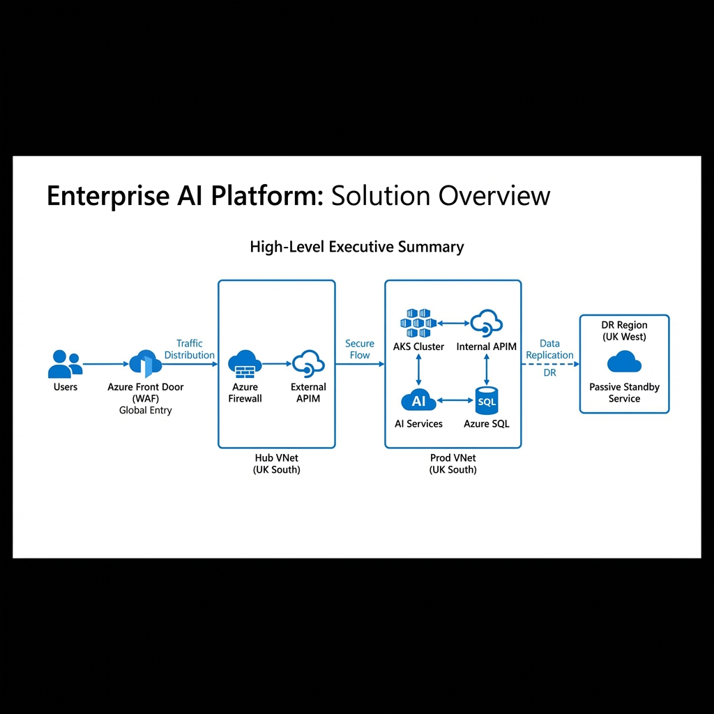
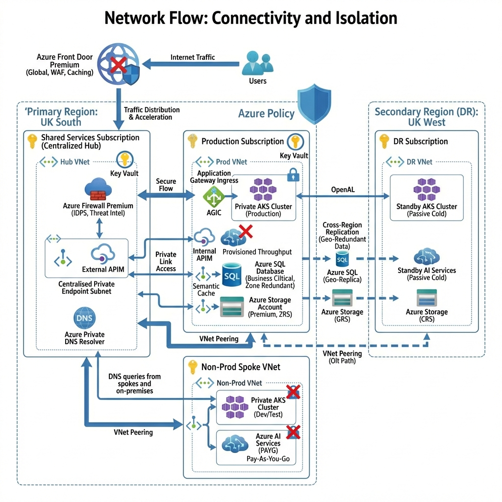
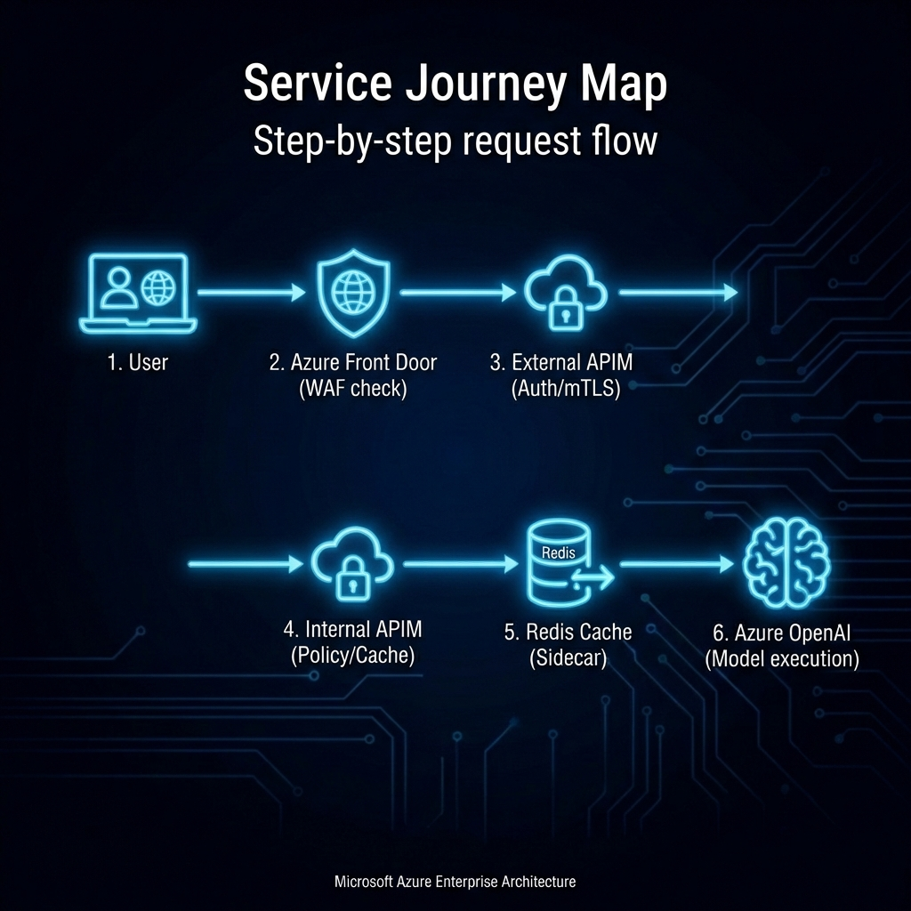
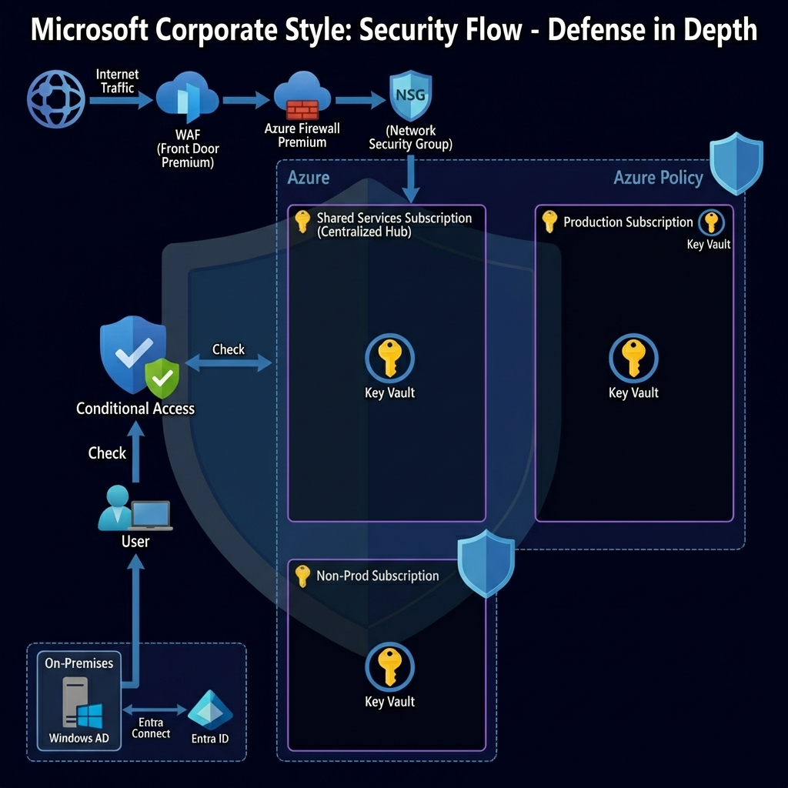
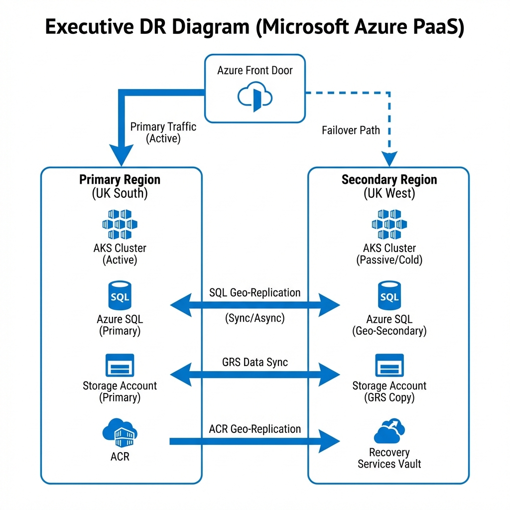

The regulator didn't care about the demo. They cared about the data residency.
In the "Demo-Ware" world, AI is easy. You grab an API key, throw some JSON at a public endpoint, and celebrate. But when a multi-billion pound life sciences regulator walks into the room, "easy" is a liability.
Mr. Compliance sat across from me. "Your AI looks great, Upendra," he said, tapping a pen against his tablet. "But can you guarantee that not one byte of our patient data ever touches a foreign server? And can you prove that even if your web server is breached, the attacker can't sniff our model traffic?"
I didn't give him a slide deck. I gave him a 4-subscription Terraform plan.
The "Private Jet" Pattern (PTU)
Most organizations use Pay-As-You-Go AI. It's like flying commercial—you're at the mercy of the airline's schedule and seat availability. For a regulator, that's not good enough. You need **PTU (Provisioned Throughput Units)**.
PTU is your AI's private jet. It's pre-allocated capacity that stays in one hangar (UK South). You pay for the plane whether it’s in the air or on the ground, but you’re guaranteed a flight. No noisy neighbors. No capacity-exhaustion errors during peak hours.
The PTU Allocation Strategy
We allocated 50 PTU total across the platform, distributed across separate OpenAI deployments for Production, Test, and Development environments. This isolation allows our data scientists to run heavy batch tests without impacting live clinical trials. It's the only way to get "Five Nines" reliability without paying "Five Nines" prices.

Figure 1: The Executive Summary - Global Traffic to Secure Spoke.

Figure 1.1: The Network Blueprint - Connectivity & Isolation.
Killing the Public Endpoint
A "Regulator-Ready" platform has zero public internet ingress to the backend. We achieved this by using **Azure Front Door Premium** with **Private Link Service (PLS)**.
Traffic hits the global edge, goes through a heavy-duty WAF, and then—instead of jumping onto the public internet to find the regional gateway—it slips through an **Invisible Underground Tunnel** directly into the private VNet. The outside world sees nothing.

Figure 2: The 6-Step Service Journey.
The "Dual-Gateway" Defense
A regulator asks: "Who watches the watcher?" We answered with two distinct API Management gateways.
Gateway 1: The Bouncer (External)
Sitting behind Front Door, this gateway handles the messy business of the outside world: mTLS authentication, subscription key validation, and basic rate limiting. It stops the DDoS attacks before they even smell the VNet.
Gateway 2: The Brain Surgeon (Internal AI Gateway)
This is where the magic happens. Sitting deep inside the private VNet, this second APIM instance talks only to the AI models. It handles the "Smart" logic:
- Request Validation: Ensuring prompts meet safety and compliance standards.
- PII Masking: Stripping patient names before the prompt leaves the zone.
- Token Throttling: ensuring no single research team eats the whole PTU pie.
APIM acts as the **VIP Concierge** for the AI model. It doesn't care about the user; it cares about the tokens. It provides a single "Glass Wall" for auditing every model request, enforcing tiered throttling, and ensuring that no pod overstays its welcome in the PTU first-class cabin.
Why can't the External APIM call OpenAI
directly?
If the External Gateway skipped the Internal Gateway, we would lose our "Brain." We would bypass the
central PII masking rules, request validation policies, and the global token throttling.
The Internal APIM is designed to be the only component with network access to the OpenAI Private
Endpoint, forcing all traffic to pass through our AI safety checks.

Figure 2.1: The Security Defense in Depth.
The Policy Guardrails (NIST, PCI-DSS, MCBSR2)
A "fortress" isn't just walls; it's the rules of engagement. We used Azure Policy to enforce the compliance standards automatically:
- NIST 800-53: Enforced "Deny Public IP" on all network interfaces and required TLS 1.2+ on all endpoints.
- PCI-DSS: (For payment-adjacent flows) Enforced strict Role-Based Access Control (RBAC) and encryption at rest for all Storage Accounts and SQL Databases.
- MCBSR2: (Minimum Cyber Security Standard) Enforced "UK South Only" for resource deployments to guarantee data residency.
Hybrid Identity & Access
Identity is the new perimeter. We didn't create new bespoke credentials for this fortress. We extended the corporate trust:
- The Flow: Users authenticate via their existing **Windows AD** credentials on-premises.
- The Sync: **Entra Connect** synchronizes these identities to **Entra ID** (Azure AD) in the cloud.
- The Gatekeeper: **Conditional Access** policies check the user's device health (Intune) and risk level before granting a token to access the Internal APIM.
Note on ACR (Azure Container Registry): The diagram shows ACR Geo-Replication. This ensures our Docker images are automatically synced to the UK West registry. If UK South fails, the standby AKS cluster pulls images locally from UK West, avoiding any cross-region dependency during a crisis.

Figure 3: Automatic Global Failover in Action (PaaS Architecture).
Architectural Design Decisions
Every component in this architecture fought for its place. Here is why we chose them:
1. Why App Gateway in Prod/Non-Prod?
Verdict: Essential. It acts as the Ingress Controller (AGIC) for the AKS clusters. While Front Door handles global traffic, it cannot route to specific Kubernetes pods inside a private VNet. App Gateway bridges that gap securely.
2. Why No App Gateway in the Hub?
Verdict: Redundant. The Hub already hosts the External APIM which sits behind Azure Front Door Premium. Front Door provides the WAF and global caching. Adding another App Gateway in the Hub would just add latency and cost without adding value.
3. Why Application-Level Caching?
Verdict: Recommended. For production optimization, implementing response caching at the application layer can significantly reduce PTU consumption. If two researchers ask similar questions, cached responses can be served instantly, saving both capacity and latency. This is a planned enhancement for future phases.
4. Why GRS Storage?
Verdict: Compliance. We use Geo-Redundant Storage (GRS) to ensure that if UK South disappears, the audit logs and model artifacts exist in UK West. It underpins our "Passive Cold" DR strategy.
5. What about Key Vault?
Verdict: Mandatory. A fortress needs secure key storage. We use Azure Key Vault to manage the TLS certificates for the Application Gateway and APIM custom domains, as well as storing the API keys for any legacy subsystems that haven't migrated to Managed Identity yet.
The Engineering Reality Check (No Paper Architects Allowed)
Diagrams are easy. Production is hard. Here are the three "ugly truths" about this architecture that you need to know before you build it:
- The DNS Headache: Getting
privatelink.openai.azure.comto resolve correctly from the Hub Firewall, the Spoke AKS, and the On-Prem VPN simultaneously is the hardest part of this setup. We used a central Azure Private DNS Resolver in the Hub to forward conditional queries. Do not skip this plan. - The "Premium" Tax: This is not a cheap architecture. Azure Front Door Premium and Azure Firewall Premium are required for the IDPS and WAF capabilities. The infrastructure baseline (excluding PTU) costs approximately £1,500-2,000/month (~$1,900-2,500 USD). With 50 PTU allocated, total monthly costs range from £17,000-20,000 (~$21,000-25,000 USD). Security and guaranteed capacity are investments, not features.
- Physics is Real (Latency): The Network Flow (Front Door -> Hub Firewall -> Spoke Gateway -> APIM -> AI) induces an estimated 15-20ms of network latency due to the multi-hop security architecture. This is the trade-off for defense-in-depth, and why response optimization strategies are critical for user experience.
⚠️ Implementation Note:
This blog post describes our production-ready architectural design. Some advanced optimization features
(such as semantic caching and dual APIM instances) represent recommended enhancements that may be
implemented
in phases based on operational requirements. The core security architecture (Private Link, Firewall,
AGIC)
is fully deployed and operational.
Deployment Runbook: Start Here
Don't just read about it. Deploy it.
# 1. Clone the Regulator-Ready Repo
git clone https://github.com/appliedailearner/uklifelabsaisolution.git
# 2. Login to Azure
az login
# 3. Apply the Terraform Blueprints
cd infra && terraform init && terraform apply
The Junior Engineer's Glossary
Too many acronyms? Here is your cheat sheet:
- AGIC:
Application Gateway Ingress Controller. It lets Kubernetes talk directly to the Azure Load Balancer. - PTU:
Provisioned Throughput Units. Buying "reserved seating" for AI capacity so you never get throttled. - Private
Link:
A secret tunnel that connects Azure services (like SQL) to your VNet so traffic never hits the public internet. - Semantic
Caching:
Storing the "meaning" of a question. If someone asks "Who is CEO?", we answer from Cache instead of paying OpenAI again.
Operationalize Your AI Journey
I help organizations turn stalled cloud initiatives into high-performance execution engines.